Chloé & Romain
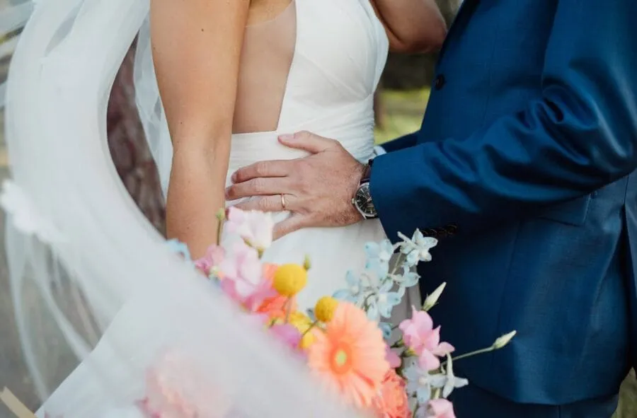
On ne se lasse pas de revivre ce mariage haut en couleurs à la @lafermedenchon ! Une journée aussi pétillante qu’élégante, portée par une robe voluptueuse, une décoration raffinée inspirée du Vietnam – le pays où nos deux amoureux se sont rencontrés 🏮 – et quelques touches originales comme un bar à burrata qui a ravi les invités. Le tout s’est clôturé par une séance photo magique sur la plage, au cœur des Landes, entre lumière dorée et brise marine. Un moment suspendu, empreint d’amour et d’authenticité.
« Alexandra est impressionnante : souriante, créative, une énergie hors norme et surtout très organisée. Nous avons été bluffés par tout ce qu'elle a pu réaliser pour notre mariage. Alexandra nous a accompagné pendant plusieurs mois, nous a aidé à choisir des prestataires à notre image, nous a conseillé et écouté jusqu'à la dernière minute. Le jour J, elle a géré d'une main de maître l'organisation et nous avons profité à 150 % de notre journée de mariage grâce à elle. La décoration de la salle et du vin d'honneur ont dépassé nos attentes, les animations étaient également parfaites. Alexandra a également fait l'unanimité auprès de nos proches avec qui elle était également un contact. Vous pouvez lui faire confiance les yeux fermés, l'avoir choisie était l'une de nos meilleures décisions. »Chloé & Romain


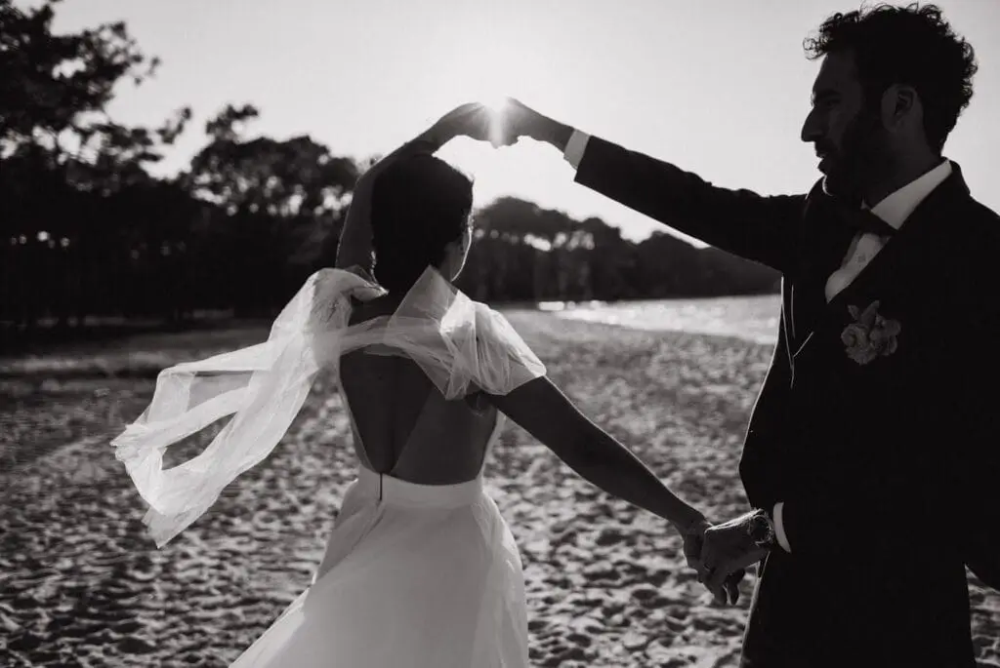
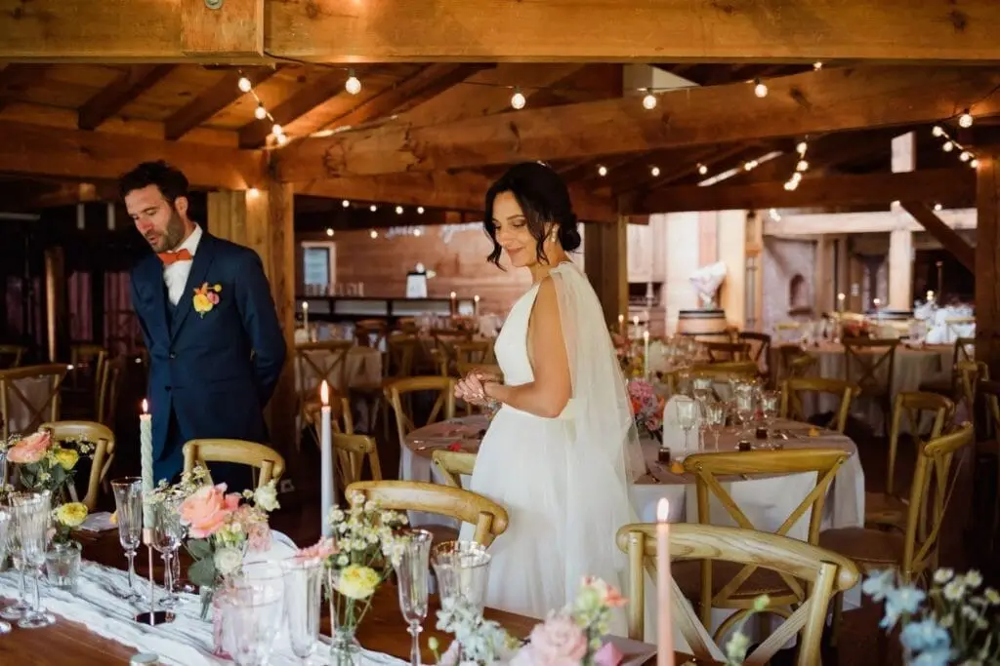
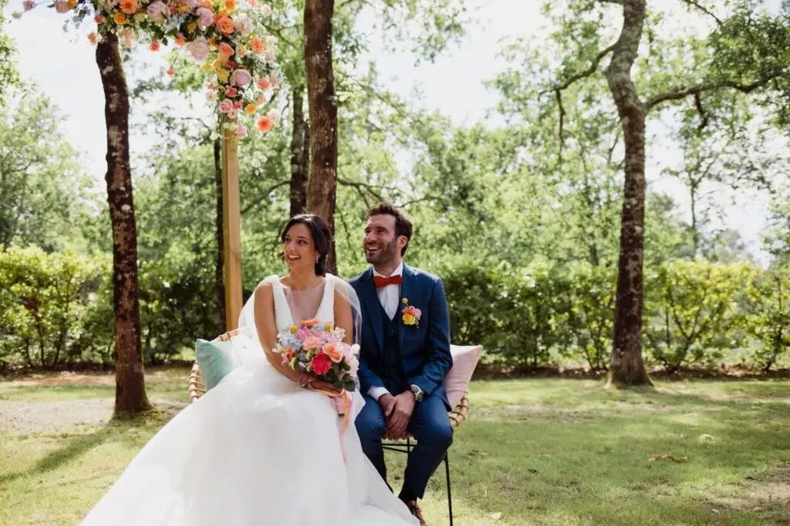


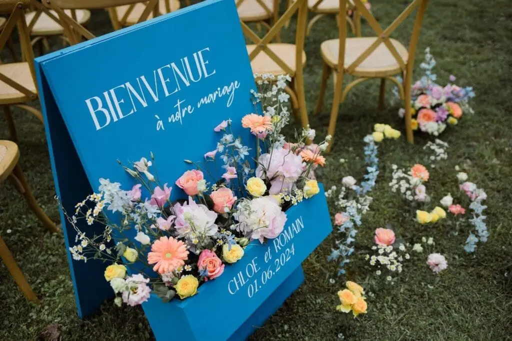

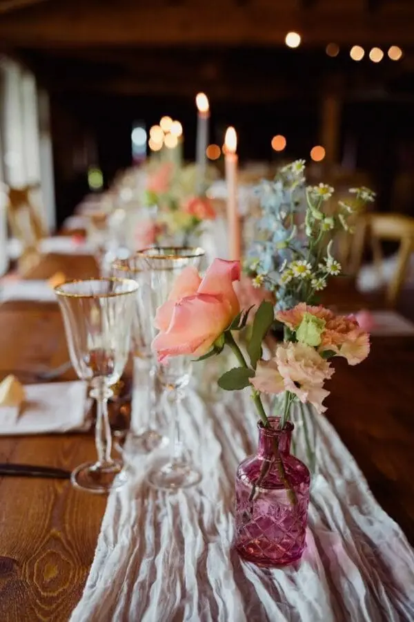


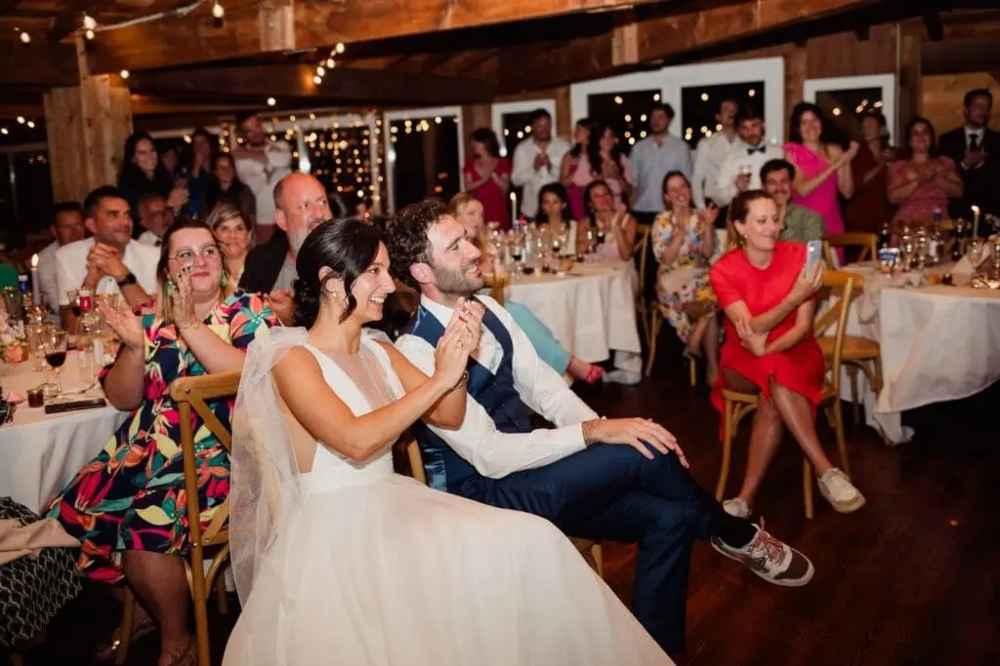


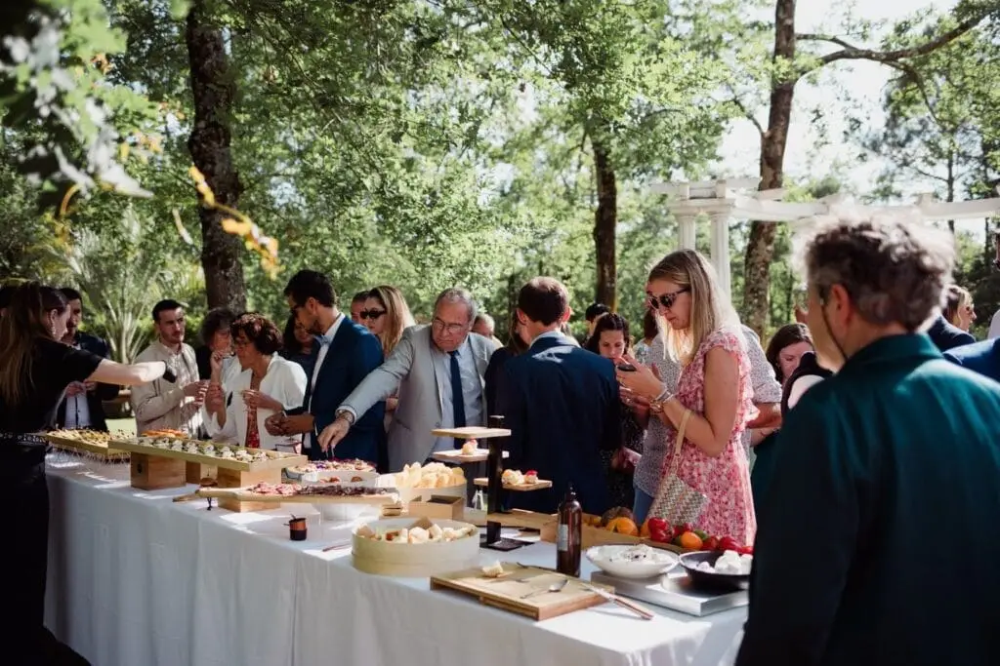


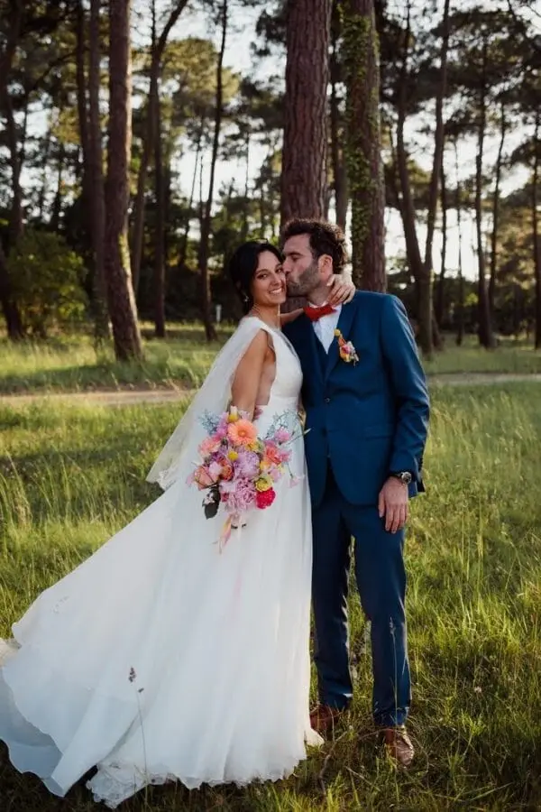
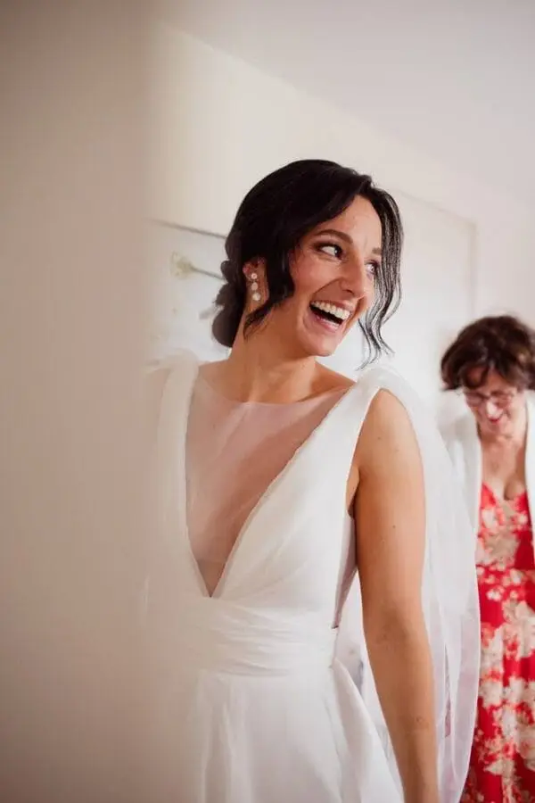
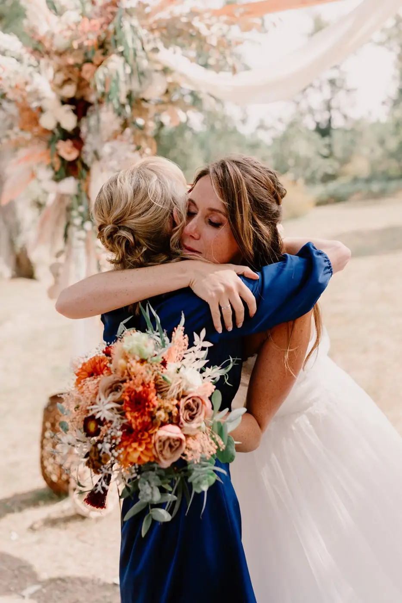
Caroline & Jackson
Ils sont beaux… beau en amitié, beau en amour, beau en générosité, beau en humour. Des mariés solaires !L’amour et l’union étaient leur priorité. Après une cérémonie à…
Lire leur histoire
Jennifer & Laurent
Après une demande en mariage sur une petite plage vers la pointe du cap ferret en face de la dune du Pyla, Jennifer et Laurent ont organisé leur mariage dans ce…
Lire leur histoire